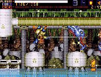

|


Review
Game Type: 2D Platform
A run-jump-shoot a la Contra. Any of the eight weapons can fire in eight
directions. Your character can also double jump, hover in midair, walk upside
down on ceilings, block bullets with an energy pulse, and most importantly
dash/teleport instantly (like Mega Man X except that you're invincible while
dashing) for nearly a full screen.
Gameplay: 80/100
This game is developed by Treasure. It's a platformer, a damn good one,
done in a style that would especially appeal to Americans. It was never
released in America. Someone at Sega desperately needs to be fired.
From the move list described above platform fans are probably already
drooling. As well you should be. Be warned, though, that the controls do
take a bit of getting used to (it's to the point where they had to include a
quick controller test before each game so you can practice the moves). Once
you have the hang of it, though, the game flows pretty well.
The main stages are rather short which is good because they're not that
well done anyway. Minor enemy designs are weak and there are a lot of cheap
hits. That's okay though because each time you plow through a handfull of the
thugs you'll arrive at a boss.
The boss designs are anything but weak. Gunstar Heroes fans are quite
familiar with Treasure's trademark bosses in all their huge, ridiculously
multijointed glory. And there are dozens of these suckers, each designed so
that fighting them is a tense but enjoyable experience. The multiple joints
mean excellent animation even on bosses as tall as the screen. They also allow
the developers to give you little warnings each time they attack. "Okay, he's
gone into a crouch. That means he's about to uppercut, so I better dash...
now!" It's a great feeling seeing a boss whiff at thin air where you were
just standing when you're already behind him, riddling him with bullets.
Somehow Treasure always manages to include some glaring fault in otherwise
excellent games, though. In AS it's the weapon select. If you happen to run
out of ammo in, say, a forced scrolling section, you have to stop where you
are, bring up a little menu, switch weapons, and jump back out of the menu -
while the game is still active. There's no way to do this while paused.
If you do manage to switch weapons, you'll usually have taken at least one
hit. If you know in advance what weapon you'll need you can work around this
but it's rather annoying.
Weapon problems aside, though, AS is a gameplay marvel.
Graphics: 80/100
The enemy graphics could use some work, and the ugly color
pallette brings the look of the levels down a notch. But the main character
design is cool, and the weapons look good. And of course Treasure manages to
pull special effects you never dreamed were possible out of the Genesis. I
am completely convinced that these bosses could not be duplicated successfully
on the sluggish Super Nintendo; they have too many sprites and animate too
quickly.
Sound: 60/100
The music is quite original, but I'm afraid I can't say it's good. There
are just too many angry warbles and bleeps to make it worth spending time in
the sound test screen. It won't bother you during the game, though (and
there's an option to turn it off). Ditto for the sound effects; they're
all loud and explosive. It would be unwise to play this game with the
stereo cranked; you wouldn't enjoy it and would most likely blow a speaker.
Overall: 80/100
"Visualshock! Speedshock! Soundshock!" hollers the title screen. I have
to agree. Maybe it's just the loud music, the loud sound effects, or the loud
colors, but for some reason playing AS gives me a headache. That doesn't mean
I don't like the game, far from it. It's just very, very intense, more
than some gamers will be ready for. Is it worth importing? If you liked
Gunstar Heroes you won't regret it for a second if you do. The text is all in
English (albeit very poorly translated English) with Japanese subtitles. And
of course the gameplay and graphics are 100% Treasure. It's a shame the
majority of U.S. gamers had to miss out on this one.
Passwords
| Stage 2 | 3698 | Stage 3 | 0257 |
| Stage 4 | 3745 | Stage 5 | 7551 |
| Stage 6 | 8790 | Stage 7 | 5196 |
| Stage 8 | 4569 | Stage 9 | 8091 |
| Stage 10 | 8316 | Stage 11 | 6402 |
| Stage 12 | 9874 | Stage 13 | 1930 |
| Stage 14 | 3698 | Stage 15 | 2623 |
| Stage 16 | 7749 | Stage 17 | 3278 |
| Stage 18 | 1039 | Stage 19 | 9002 |
| Stage 20 | 2878 | Stage 21 | 3894 |
| Stage 22 | 4913 | Stage 23 | 2852 |
| Stage 24 | 7406 | Stage 25 | 5286 |
|